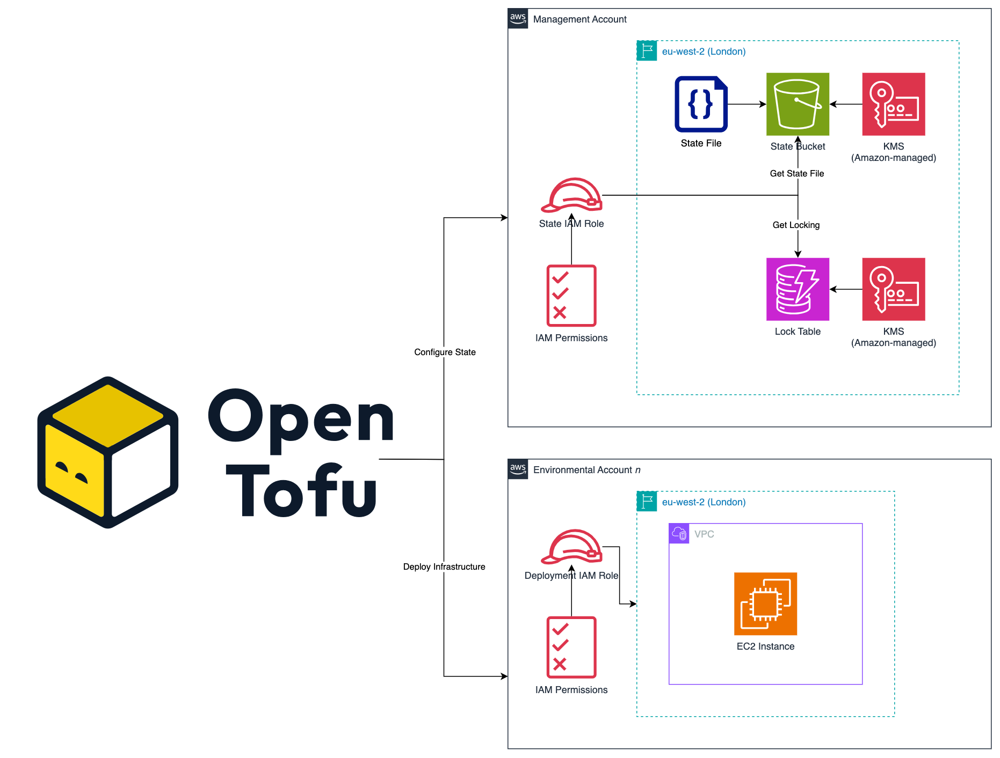

OpenTofu Workflow
OpenTofu was used to deploy the infrastructure defined via the bootcamp. I believe passionately in Open Source, and thought this project was the perfect opportunity to use it for the first time! This page covers the workflow I created for this project, and goes over why I made the decisions I did.
State Management
To manage the state file, we are using the native S3 backend for storage. Followed by DynamoDB for the state locking. Amazon managed encryption keys were used to encrypt the bucket and table.
Info
In a customer/production situation, I would create dedicated CMKs (customer managed keys). However, I wanted to keep this in the free tier as much as possible.
A decision I made here is using separate IAM roles for managing the state file and the deployment of infrastructure. This means we can better adhere to the principal of least privilege as we wouldn't need to give the deployment role (the role that Terraform assumes to actually deploy infrastructure) permissions to also use the state file. This is super useful if you store your state file in a separate AWS account and is easy to implement. OpenTofu and Terraform can have two distinct authentication mechanisms:
- Accessing the state file (using the
backend "s3" {}block) - Deploying resources (using the
provider "aws" {}block)
If you don't explicitly configure the state file authentication, the authentication you configure at the provider level is used to access the backend.
Diagram
A diagram has been created below showing how the state file management has been configured along with a high level n account (e.g. dev, test, prod etc.) to show the separation.

Info
The rest of the workflow follows the traditional write, plan and apply workflow. You can find more information about this on OpenTofu's website: https://opentofu.org/docs/intro/core-workflow/
You can view more information on what these environment variables are at:
Quote (from opentofu.org)
If TF_IN_AUTOMATION is set to any non-empty value, OpenTofu adjusts its output to avoid suggesting specific commands to run next. This can make the output more consistent and less confusing in workflows where users don't directly execute OpenTofu commands, like in CI systems or other wrapping applications.
This is a purely cosmetic change to OpenTofu's human-readable output, and the exact output differences can change between minor OpenTofu versions.
Quote (from opentofu.org)
If set to "false" or "0", causes tofu commands to behave as if the -input=false flag was specified. This is used when you want to disable prompts for variables that haven't had their values specified.
Partial Backend Configuration
This Minicamp implements what is known as a "partial" backend configuration. This is where some of the backend is declared in the backend block, but some are passed in as CLI flags or as files to the tofu init command.
You can see the backend block below:
You may notice the key is missing from this, which points to the location of the state file in the S3 bucket. In my workflow, this is added inside the tofu init commands when the workflows run:
| .github/workflows/tofu_plan.yml | |
|---|---|
I made this decision so I am sure the right state file for the right environment is always present, where as using different files could be prone to human error where it refers to the wrong state, even worse if you're not paying attention and then approve it to deployment!
Write
I like to keep everything related to the configuration of OpenTofu to itself as much as possible. What do I mean by this? For example: the role that OpenTofu uses to deploy infrastructure, I define it using the assume_role_with_web_identity block directly in the configuration itself. The role OpenTofu uses to configure the remote backend, again using the assume_role_with_web_identity block inside the backend "s3" {} block directly in the code. The version of OpenTofu to use, I use the required_version argument in the terraform block to control what versions of OpenTofu can be used.
With some of these, you can pass in config via different files, such as .hcl for different backend configurations. How the authentication/authorisation works, you can pass in environment variables and CLI flags to configure it. It's awesome that this flexibility exists, but when someone looks at my code, I want to give them one common, standardised way everything is configured.
For an engineer to understand the authentication flow, I don't want them having to go to the OpenTofu configuration, see some of it is there and then have to go to the workflow to see what roles are being used etc.
I know what you might be thinking, didn't you do this for the state file, you used a partial backend configuration right? I did, but I've been in situations before where the wrong backend was configured for an environment and well, you can probably guess what happened next. Yes, you can technically rollback if your configuration is in git (it should be by the way!) but all that infrastructure still has to be deployed again; it doesn't magically reappear.
Versions and Providers
OpenTofu Versions
I've configured the OpenTofu GitHub Action to always use the latest version of OpenTofu at runtime. This is as opposed to specifying a specific version of OpenTofu to run by passing in the variable into the Action. The control over which version to use is managed in the required_version argument of the terraform block:
Note
If the version constraint above does not meet the latest OpenTofu version, we would need to pass in which version to use to the OpenTofu Action.
Providers
The providers used are:
| tofu/provider.tf | |
|---|---|
aws
Inside all OpenTofu actions in the workflows, we use curl to get the OIDC token file that saves it in /tmp/web-identity-token, we then use this to configure the assume_role_with_web_identity block at the backend level and provider level as we are using different roles to interact with the backend, and another to deploy infrastructure.
Now, why am I not using the official AWS aws-actions/configure-aws-credentials GitHub Action. Simply put this Action is a 1-2-1 relationship with itself and ONE role - as we are using multiple roles here it would mean I would have to configure this Action twice. To keep the workflow as small as possible, and as I want to keep everything configured using OpenTofu as much as possible it made sense to do it this way.
Unfortunately it isn't like the official GCP (Google Cloud Platform) GitHub Action that can output a token file for use.
I'm also using the default_tags block, which is a requirement of the minicamp, but I've used this as soon as it was released, I think, in Version 4 of the AWS provider? It's much nicer to use now than back then, those "inconsistent final plan" error messages were a pain to deal with!
Here the tags project=morethancertified and environment=dev/prod are applied to all taggable resources declared as part of the configuration. This beats having to specify the tags block for each resource! You can still do this however to override and/or apply specific tags to specific resources, but this makes it much easier!
http
This provider, and it's only data source is to verify application availability using check blocks.
| tofu/instance.tf | |
|---|---|
Variable Validation
Variable validation has also been implemented to enforce specific values, or a match against a pattern:
I won't go into massive detail about each one, as some use the same techniques, but give a overview of clear differences.
Variable validations are defined using the validation block. A variable can have zero to many validation blocks as you see fit. They are made up of two parameters only - condition and error_message:
The condition MUST return a boolean, true or false. The former meaning the validation has passed, and the latter raising the error_message and stopping the specific action with an error, such as tofu plan.
Example 1
The contains() function returns true or false depending whether var.environment contains dev or prod. We use the format() function in the error message to present the value that is invalid to the user. The %#v statement tells the format() function to escape it using JSON which means we can safe print in the terminal.
Example 2
This example uses the can() and regex() functions to check the name of the instance is lowercase, alphanumeric and contains hyphens only. The regex() function would return a value if it matches, but not a boolean. This is where we use the can() function. If the input of can() succeeds, which in this case is the regex() function, it returns true, if the input errors, which would mean regex() didn't find a match, can() would return false.
Like the example above, we use the format() function to present the bad value to the user.
Example 3
This example uses a condition to check whether the volume size is less than, or equal too 10. If it's bigger, it returns false and if it is 10 or less, it returns true
Example 4
As this variable is a map(string), we need to validate the entire input. The validation in this does multiple things which ensures it meets AWS recommendations for tagging standards and requirements.
Here we loop over all the keys in the map using the keys() function. This returns a list of keys from a map. We then use the startswith() function to check whether each key starts with aws:. If it does, it returns true for that key or false if it starts with something else. Now this is a reserved tag that you cannot create as AWS won't allow you too.
Assuming we have 5 additional tags, meaning 5 keys, and all starting with aws: our loop now looks like this:
We then use the anytrue() function, which takes a list and if any items in the list are/contain true it returns true or false:
Now obviously we cannot create a tag starting with aws: so we use conditional logic in the form of: condition ? true_value : false_value. So since we know it our example returns true in the condition, so now we have told OpenTofu to report this as false - meaning raise the validation error!
Tip
There are other ways you could implement this, such as using ! in front of a function which basically negates the output, essentially reversing the normal operation. So if anytrue() returns true, !anytrue() would return false.
I super recommend using tofu console to test custom validation logic out as it's super powerful. You don't have to run a tofu plan each time, just run tofu console and you get a sandbox to test OpenTofu functions!
Checks
check blocks are an additional way of validation, but instead of erroring out the run it shows a warning instead and doesn't interfere with the OpenTofu operation.
We use one check block inside this project:
| tofu/instance.tf | |
|---|---|
Here we're using the http provider to check whether it can access the Grafana instance we have created on AWS! One key difference between variable validation and check blocks are that checks use assert instead of validation - but the logic in how they are evaluated is the same. If true, warning not raised, otherwise raise warning.
The http data source is referred to as a scoped data source, which basically means it cannot be accessed outside of the check block that contains it.
Testing
We can use the tofu test framework to build out tests to further validate configuration. As part of this minicamp, we've got 3 test files with multiple tests. An example is below:
This test ensures we are deploying to the correct AWS account based on the environment that we are working on. We say run this as a plan test, specifically not to refresh the state (which OpenTofu does when you run a tofu plan) as it's not used in this test.
You can also see an expect_failures argument here too, which tells the test expect this check block to fail, which is actually our check block checking Grafana is available.
Note
Although the check block is not in scope of the tests directory in tofu/ it still checks the check block (pardon the pun) which was annoying as technically the check block isn't even in scope of the tests tofu test is meant to run. But for now this is how it works.
Plan
The next part of the core OpenTofu workflow is planning to check what changes it wants to make.
Plan File
Throughout this Minicamp we create the plan file but don't actually use it when it comes to the tofu apply - we could do this using the upload artifact and download artifact GitHub Actions but in general it is best practice to encrypt it as it may contain sensitive information, or anything you might "deem" sensitive. You can actually do this in OpenTofu itself now natively, it's one of the key differentiators when compared directly with Terraform. The benefit of the plan file approach is that OpenTofu doesn't do another plan when you apply. When you specify --auto-approve OpenTofu generates another plan and then executes it. This has two potential issues:
- Speed - Using the plan file from the
planstep you can execute the changes much quicker as there's no need for a second "plan". - Guarantee of Changes - Depending on the time gap between the plan running and then someone approving the workflow to apply the changes, someone could have made some manual changes that were not captured in that first plan. Normally if you execute an
applyright after theplanthis is unlikely, but sometimes you might go a few hours or potentially days if you waiting to do a change based on any change management process.
Note
One of the aims for further steps is to implement the plan file workflow approach!
Apply
We take the output of the plan, and then make a decision on whether we want to tell OpenTofu to attempt to deploy those "planned" changes.
Destroy
Once we're done with the infrastructure, we will destroy it! Now this step isn't normally part of the core OpenTofu workflow officially; it's just Write, Plan and Apply. Obviously if the infrastructure was serving an actual service that end customers pay for, it's a different story, but this is a Minicamp. Cost control has taken over the industry by storm, with terms used that you might be aware of like FinOps. There's even a FinOps Foundation: https://www.finops.org/.
I personally believe that cost should be everyone's responsibility, although you might not be typically involved as an engineer in finance. However, engineers ultimately deploy the infrastructure that creates the bills! Typically cost is reactive, I mean, once you get your bill it's basically too late. Instead we should be more proactive, and tools such as Infracost are one way where we can govern cost before the changes are made to infrastructure.